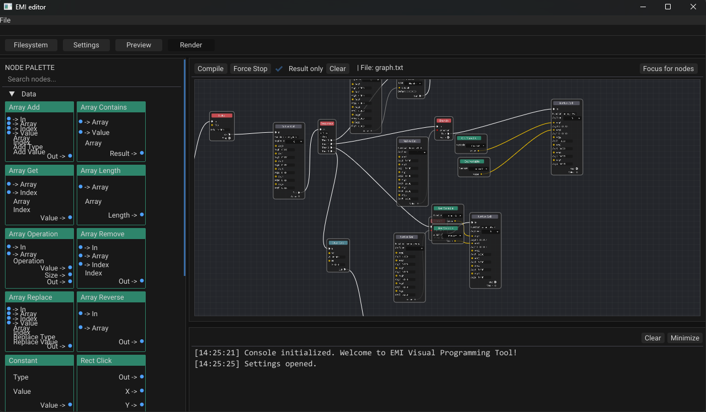

Alex Lundström
Olen neljännen vuoden tietotekniikan opiskelija Tampereen yliopistossa. Erikoistun erityisesti kyberturvallisuuden sekä tietoliikennetekniikan alaan, mutta olen opiskellut myös ohjelmistotekniikkaa. Olen tehnyt useita projekteja, joista osa on esitetty tämän alapuolella. Kirjoitan tällä hetkellä kandidaatintutkielmaa, joka käsittelee SSD-levyjen turvallista tiedonpoistoa.1 Tutkielma valmistuu tämän vuoden loppuun mennessä.1Tutkielmasta lisää kohdassa Kandidaatintyö.
Homelab
Olen tehnyt homelabin, joka koostuu virtuaalikoneista. Projekti on tehty englannin kielellä. Skenaarioiden tarkoitus on oppia yleisimpiä hyökkäysmenetelmä, sekä oppia lukemaan muun muassa lokitiedoista hyökkäysten piirteitä.
Skenaariossa 01 SMB brute-force teen brute-force hyökkäyksen toiseen virtuaalikoneeseen, missä arvaan tilin heikon salasanan ja luen tililtä tiedoston. Skenaario on valmis, ja on saatavilla GitHubissa.
Skenaariossa 02 Persistence hyökkääjä asentaa virtuaalikoneeseen pysyvän pääsyn, joka säilyy uudelleenkäynnistymisen jälkeen. Skenaario on vielä kesken, ja julkaistaan myöhemmin.
- Laboratorio
- Kali Linux ja Windows 11, VirtualBox
- Lähdekoodi
- cybersecurity-home-lab GitHubissa
Mitä opin
- Homelabin rakentaminen
- Rakensin laboratorion VirtualBoxilla kahdella eri käyttöjärjestelmällä eristettyyn verkkoon. Määritin verkon, käyttäjätilit, tiedostot ja tilannekuvat. Työskentelin sekä Linuxin että Windowsin komentorivillä.
- Tunkeutumistestauksen ja red teamingin perusteet
- Toteutin hyökkäyksen Kalista. Siinä skannasin kohteen Nmapilla, kartoitin SMB:n NetExecillä, murtauduin tiliin salasanalistalla ja luin tiedoston tililtä.
- Valvonta ja lokien lukeminen
- Luin Windowsin tietoturvalokeja ja opin tapahtumatunnukset ja kirjautumistyypit niin, että erotan hyökkäyksen normaalista toiminnasta. Wiresharkilla luin verkkoliikennettä ja löysin kirjautumisyritykset suodattimilla.
- Ohjelmointi
- Opin myös kirjoittamaan Pythonilla tunnistimen, joka löytää hyökkäysketjun tietoturvalokista.
Miten laboratorio on rakennettu

Verkkosivut
Teen verkkosivuja yrityksille omalla toiminimelläni. Palvelun oma sivusto on alexlundstrom.fi.
Aloitin verkkosivujen rakentamisen harrastuksena, ja olen tehnyt niitä nyt yli neljä vuotta. Yliopisto-opinnot ovat syventäneet osaamistani ohjelmistokehityksestä.
Sivustolla on kaksi esimerkkisivua, parturille ja pizzerialle. Tein ne portfoliota varten, joten niiden yritykset ja sisältö ovat kuvitteellisia.
Projektit
EMI Node Editor
Teimme keväällä 2026 Software Engineering Project 1 -kurssilla seitsemän opiskelijan ryhmässä visuaalisen ohjelmointityökalun. Toteutin työkaluun tiedostojärjestelmän ja kirjoitin projektin dokumentaatiota. Olin myös mukana toteuttamassa solmujen toiminnallisuutta.
- Kurssi
- Software Engineering Project 1, kevät 2026
- Ryhmä
- 7 opiskelijaa
- Kieli
- C++
- Lähdekoodi
- EMI-Node-Editor GitHubissa

Elokuvasuosittelija
Elokuvasuosittelija ehdottaa elokuvia käyttäjän aiempien valintojen perusteella. Tein frontendin Reactilla ja backendin Flaskilla.
Tein full stack -sovelluksen alusta alkaen. Syvensin ymmärrystäni siitä, miten dataa haetaan tietokannasta, miten algoritmi laskee suositukset annetusta datasta ja miten tulokset reititetään frontendiin.
- Frontend
- React
- Backend
- Flask
- Lähdekoodi
- movie-recommender GitHubissa
Opinnot
- Yliopisto
- Tampereen yliopisto
- Ala
- Tietotekniikka, 4. vuosi
- Erikoistuminen
- Kyberturvallisuus
Kandidaatintyö
Työni käsittelee SSD-levyjen turvallista tiedonpoistoa. Työ on tekeillä.
Keskeiset kurssit
Olennaiset kurssit, joista olen oppinut eniten.
- Kyberturvallisuus
-
- Security Protocols
- Cryptography Engineering
- Kyberturvallisuus 1: perusteet
- Tietoliikennetekniikka
-
- Tietoverkkotekniikat I ja II
- Tietoverkkojen laboratoriotyöt I
- Langattoman tietoliikenteen perusteet
- Ohjelmistotekniikka
-
- Ohjelmointi 1, 2 ja 3
- Tietorakenteet ja algoritmit 1
- Tietokantojen perusteet
- Software Engineering Project 1
- Tekoälyn perusteet
Yhteystiedot
Tavoitat minut parhaiten sähköpostilla tai LinkedInissä.
- Sähköposti alexlundstrom42@gmail.com
- LinkedIn LinkedIn-profiili
- GitHub github.com/AlexLundstrom
- CV Lataa CV